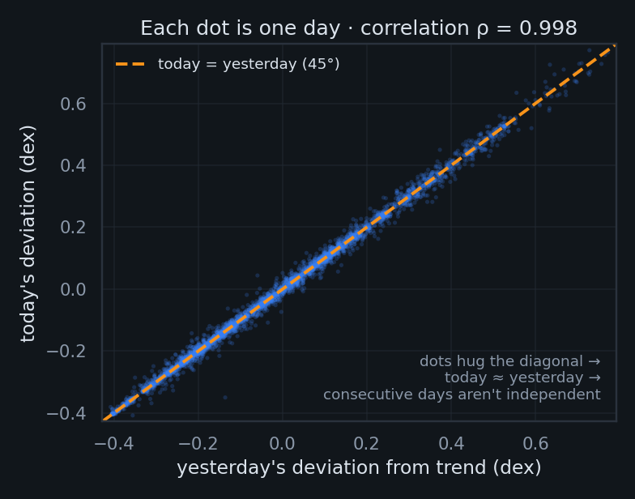
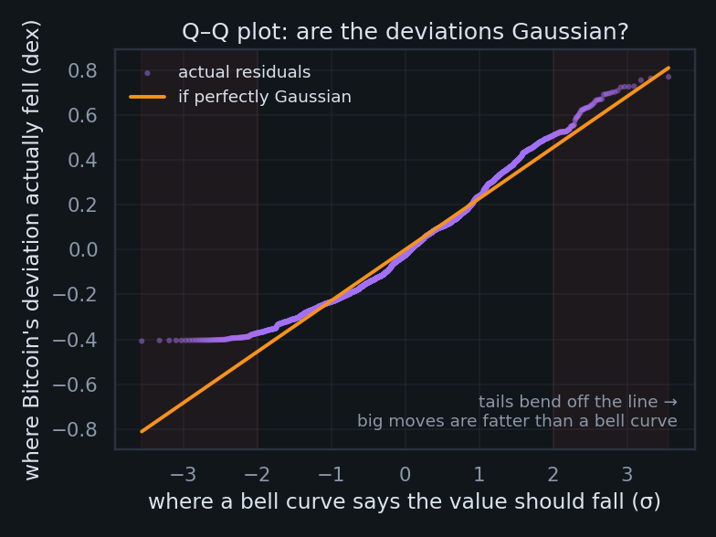
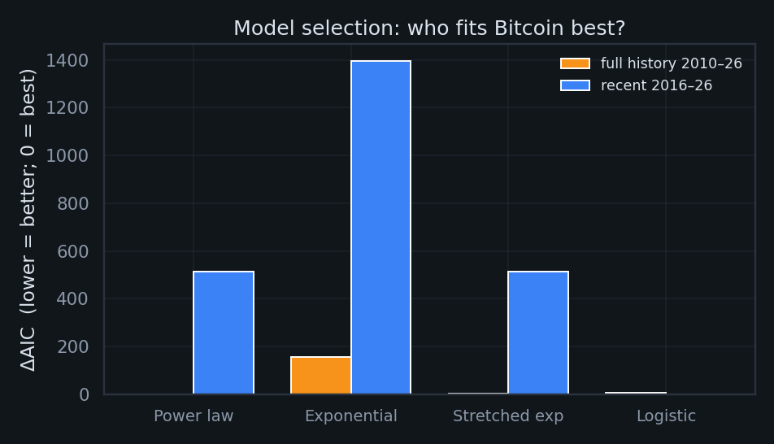
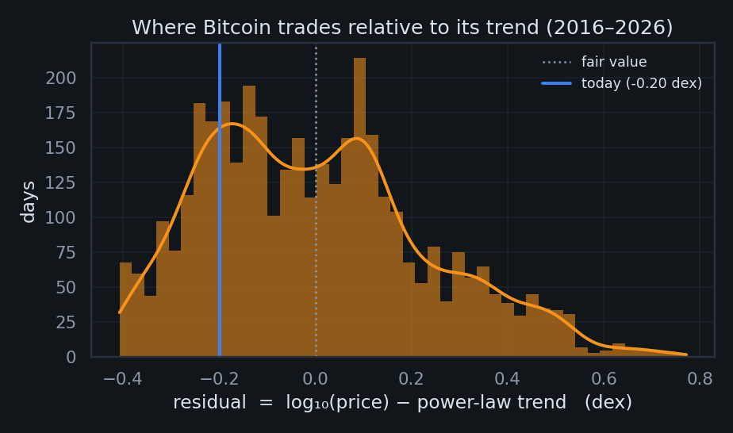
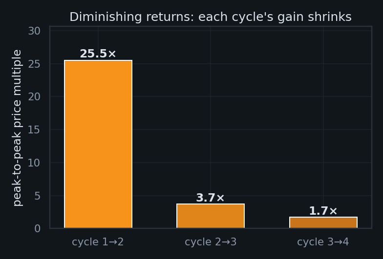

One line across six orders of magnitude
The Bitcoin power-law model (Santostasi; Burger) says price grows as a fixed power of Bitcoin's age, not exponentially:
where $t$ = days since the genesis block (2009-01-03). On log–log axes a power law is a straight line — the slope is the exponent $n$. Shown on calendar time with log price (the lower panel), the same law becomes a gentle log curve that flattens as growth decelerates — the clearest view of the modern price-vs-age relationship. (A pure exponential would instead be a straight line on that semi-log view, implying a constant doubling time Bitcoin has never had — which is why it loses in Lens 3.)
The exponent is real — but far less precise than it looks
"R² = 0.94 sounds decisive. What's the actual uncertainty on the exponent?"
First, the intuition. A fit's error bars depend on how many independent facts the data really contains. Bitcoin doesn't teleport — today's distance above or below the trend line is almost exactly yesterday's. So ~3,650 daily prices are not 3,650 independent observations; they're more like a few dozen genuinely different "situations," each smeared across weeks of nearly-identical days. The picture below is the whole problem in one frame:

Two fixes, one humbling answer
Newey–West (HAC) errors — a discount for repetition. Picture a crowd where everyone just parrots their neighbor: HAC measures how long opinions stay correlated, counts the independent voices rather than the headcount, and widens the error bars to match.
Moving-block bootstrap — resample in streaks, not single days. Slice history into overlapping 180-day blocks, shuffle the blocks, and re-fit thousands of times. Each block keeps a run of correlated days intact, so the synthetic histories are exactly as "sticky" as the real one. The spread of exponents across those refits is the honest 95% interval.
Mnemonic: HAC fixes the formula; the bootstrap simulates the uncertainty — two roads to the same place.
So what's a more appropriate sampling mechanism? Either thin the data to roughly-independent chunks (sample monthly, not daily), or — better — keep every day but tell the math how correlated it is. The two methods above do exactly that: both shrink the effective sample size and widen the interval honestly, instead of pretending each day is fresh evidence.
"But how can the residuals be 99.8% autocorrelated and the fit still explain only 86%?" Because those measure different things. R² asks how much of the giant up-and-to-the-right does the trend capture? — almost all of it. Autocorrelation asks how sticky are the leftover wiggles? — extremely. A ball rolling down a long ramp: the ramp explains the journey (high R²), yet the ball's slow side-to-side wobble persists for months (high residual autocorrelation). They coexist happily. And that wobble isn't random noise — it's money supply, halving cycles, ETF flows, regulation, war. The model has one input, time; everything else the world does to Bitcoin lands in the residual. That, ultimately, is why the honest error bars are wide.
Two things that both go up will always look related
"Regress any rising series on time and you get R² > 0.9. How do we know this isn't that?"
The two series here are simply (1) Bitcoin's log price and (2) its log age — a clock. Both rise relentlessly, so a high correlation is nearly guaranteed whether or not one has anything to do with the other. Granger & Newbold's classic warning is that this kind of spurious regression leaves a fingerprint in the leftover errors: they trickle in one direction instead of scattering.
The sanity check, in plain words. If the trend genuinely captured the relationship, its errors should look like random static — a miss above the line just as likely to be followed by a miss below. Bitcoin's don't: a miss above is almost always followed by another miss above (that's the 45° plot from Lens 1, again). The Durbin–Watson statistic is just one number from 0 to 4 that scores this trickle — 2 means "random static," near 0 means "errors marching in lockstep." Bitcoin's is ≈0.005, practically a conga line. Mnemonic: DW = 2 is a fair coin; DW ≈ 0 is a skipping record.
Here's the subtlety most takedowns miss. One of our two "trending series" isn't random at all — log(age) is a deterministic clock with no surprises in it; the stochasticity all lives in the price, not the clock. Bitcoin's actual drama — bull runs, crashes, ETF approvals — never enters the regressor. So the honest model isn't "price = clock"; it's "price = clock + everything the world did," where that second term is large, random, and entirely absent from our two-variable fit. A faithful specification would add an exogenous stochastic term — a stand-in for liquidity, policy, and sentiment — rather than pretend time alone moves price. That missing term is precisely what shows up as the fat, sticky residual.
Which leaves the question this whole section is really circling: when price strays from the clock, does something pull it back, or does it wander off and stay gone? That is mean reversion — measured directly in Lens 4. The stationarity tests below are its formal version: do deviations eventually die out, or persist forever?
ADF and KPSS are built with opposite null hypotheses, so quoting one alone is cherry-picking. Together they ask the mean-reversion question: do deviations from the line eventually die out (stationary), or persist forever (unit root → wandering)? Engle–Granger here is the ADF test on these same residuals (a corroborating method, not an independent test).

Power law vs. exponential vs. stretched-exp vs. logistic
"If you let other growth curves compete fairly, does the power law actually win?"
All four models are fit in the same log-price space on the same data, then ranked by the Akaike Information Criterion (AIC). AIC rewards goodness-of-fit but charges a toll of 2 points per free parameter — a model only earns its complexity if it explains enough extra variance to pay for it.
Two things readers usually get wrong here. First, the models do not share a parameter count $k$ — that asymmetry is the whole point of the penalty: power law and exponential each have $k=2$, stretched-exponential $k=3$, logistic $k=4$. Second, a ΔAIC of 0 does not mean a perfect model. AIC is purely relative: "0" just labels the best of this lineup — the absolute fit could still be mediocre. ΔAIC is the gap back to that leader (rule of thumb: <2 ≈ a tie, >10 = decisively worse).
What each curve actually claims
| Model | k | Shape of growth it assumes |
|---|---|---|
| Power law $P=A\,t^{n}$ | 2 | Growth rate fades like $n/t$ — each doubling takes proportionally longer. A straight line on log–log. |
| Exponential $P=A\,e^{kt}$ | 2 | Constant % growth → a fixed doubling time. Straight on semi-log. The shape BTC has never obeyed. |
| Stretched-exp $\log P=a+b\,t^{c}$ | 3 | A dial between the two ($c{<}1$ ⇒ sub-exponential). Flexible middle ground. |
| Logistic S-curve | 4 | Power-law-like early, then bends to a hard ceiling — assumes eventual saturation. |
Power law vs. exponential — the one that matters. To the eye they look almost identical, but the assumption underneath is opposite: the exponential locks in a constant doubling time, while the power law lets the doubling time stretch without limit. Bitcoin's doubling time has demonstrably lengthened (Lens 7) — which is exactly why the exponential is crushed below.
Full history · 2010–2026
Recent only · 2016–2026

How fast does Bitcoin snap back — and how hard does it get shoved?
"If the deviation is a signal, what governs it — its pull, its equilibrium, and its shocks?"
Treat the deviation from trend, $r(t)=\log_{10}P-\text{trend}$, as an Ornstein–Uhlenbeck process — the canonical "spring with random kicks":
$\theta$ = the equilibrium it's pulled toward (here, the power-law line itself), $\lambda$ = the strength of that pull (bigger ⇒ snappier; half-life $=\ln 2/\lambda$), $\sigma$ = the size of the random shocks, and $dW_t$ is Brownian motion (idealized noise). Estimating all three is exact, because an OU process sampled daily is an AR(1) — an autoregression in which today equals a fraction $\phi=e^{-\lambda}$ of yesterday plus a fresh shock. Regress $r_t$ on $r_{t-1}$: the slope gives $\lambda$, the intercept gives $\theta$, the residual spread gives $\sigma$.
The shock term isn't constant — that's the catch
The clean equation above assumes one fixed $\sigma$. Reality disagrees: the 90-day volatility of $r$ swings across between regimes (a span). That non-stationary $\sigma$ is the exogenous, stochastic term from Lens 2 made concrete — liquidity, leverage, and macro shocks don't kick with constant force. The honest next step is to let $\sigma$ itself follow a process (e.g. GARCH), turning the constant-$\sigma$ spring into a regime-switching one.

Does a power-law backbone coexist with log-periodic bubbles?
"Sornette says bubbles accelerate super-exponentially with log-periodic wobbles. Are they really there — in every cycle, or just the one you picked?"
The Log-Periodic Power-Law Singularity model — the Johansen–Ledoit–Sornette framework — says a bubble accelerates toward a finite-time critical time $t_c$ while oscillating ever faster (log-periodically) on the way up:
Two parameters carry the meaning, and their bounds aren't arbitrary. $m\in(0,1)$ forces growth that is super-exponential yet stays finite at $t_c$ (the slope blows up; the price doesn't). $\omega$ is the angular frequency of the wobble — how many oscillations the bubble packs in as it nears $t_c$. Sornette's empirical and theoretical work finds genuine bubbles cluster at $\omega\approx 6$–$13$: much below ~4 the "oscillation" is so slow it just melts into the trend (no real signal); much above ~15 it's chasing high-frequency noise. So we search $\omega\in[4,15]$ but only accept a fit as a bona-fide bubble if $\omega\in[6,13]$ and $m\in[0.1,0.9]$.
The fix for cherry-picking: run the exact same fit on every cycle's run-up, not just the flattering one.
Is the exponent one constant, or a different slope each era?
"A law has a fixed parameter. Does Bitcoin's exponent survive the halvings?"
Roughly every four years Bitcoin's new-supply rate halves — a scheduled shock to the asset's economics. If the power law were a fixed structural law, the exponent $n$ should be the same on both sides of each halving. The Chow test checks exactly that: fit one pooled line across a candidate break date, then two separate lines (before and after), and ask — via an F-test — whether splitting cuts the error by more than chance would. A "structural break" simply means the two-line model wins: the slope genuinely changed at that date. A small p-value flags a real break; here the candidate dates are the halvings.
Each row tests "did the exponent change at this halving?" via an F-test on the pooled vs. split fits. p < 0.05 ⇒ a statistically significant break.
Diminishing returns are a feature — and they hint at the fourth point
"Each cycle's gains shrink. Does that break the power law, confirm it — and what's the next data point?"
A constant log–log slope mathematically requires arithmetic returns to shrink: holding $d\log P/d\log t = n$ fixed means a given % gain needs an ever-longer stretch of calendar time. One assumption to be honest about: this is a statement about the envelope of cycle peaks, not day-to-day price — Bitcoin is anything but monotonic between peaks (its worst drawdown reached ). The deceleration shows up cleanly only peak-to-peak:

Three points — and an estimate of the fourth. The observed multiples () decelerate fast. Two simple extrapolations bracket the current cycle's likely peak-to-peak gain: a gentle one (the excess multiple, $\text{mult}-1$, decaying geometrically toward a no-gain floor of 1×) and a steep one (log-linear in cycle number).
What survives scrutiny — and what doesn't
✓ Holds up
- As a descriptive growth envelope, the log–log trend is excellent and spans six orders of magnitude.
- The exponential model is decisively rejected — Bitcoin's doubling time is not constant.
- Diminishing cycle returns are internally consistent with a decelerating power law.
- A weak, slow mean reversion to the trend is detectable (~9-month half-life).
- LPPLS shows real log-periodic structure within bubble episodes (as a hedged diagnostic).
✗ Does not survive
- "High R² proves a law." It's mechanical against any monotone clock — worthless as evidence.
- A precise exponent. Honest CI is ≈[4.3, 6.2], not the literature's 5.8 ± 0.01.
- "Power law beats all models." A logistic fits the recent decade better; the data can't separate them.
- A stable parameter. The exponent breaks at halvings (Chow) and drifts.
- LPPLS as a crash-date predictor, and the strict "spurious-regression" label (cointegration is undefined vs. a deterministic clock).